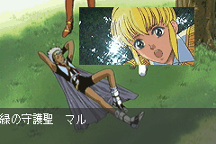

Angelique (Japan)
EEPROM 64K
Cartridge Identity
- Game Code
AAGJ(FamilyAAG)- Header Title
ANGELIQUE- Maker / Revision
C8/ rev0- ROM Size
- 4.0 MiB (4,194,304 B)
- Save Media
EEPROM 64K- SHA-256
2848bd6bb017d2a810ed2985f7bc80736a0c6d686f233b8ee2c5e855d7ea07bc- Engine / SDK Group
comm-013(29 families)
Screenshots

Observed Battery Save Layout
- Fill Byte & Active Size
0x00fill · 120–120 / 8,192 B active (entropy 3.51 bits/B)- Active Offset Ranges
0x0–0x7,0x9–0xF,0x400–0x407,0x409–0x40F,0x800–0x807,0x809–0x80F,0xC00–0xC07,0xC09–0xC0F, +8 more (16 total)- ASCII Magic / Headers
UQILEGNA,ABGrofE- Observed Variable Regions
- 0 bytes across 0 spans: None
- Candidate Checksum/Counter Spans
- None
ROM Assets, Compression & Audio
- BIOS Compression
- LZ77 (
0x10): 1,072 streams · RLE (0x30): 0 streams - ROM Pointer Tables
- 33 tables (9 pointing to validated compressed streams)
- SDK Backup Tags
EEPROM_V122
Hardware MMIO Subsystems
ppu_display0x8000664,0x802f394,0x802f464,0x802f52c,0x802f93c,0x802f990,0x80301a0,0x80314e8,0x80323f8,0x8036710(+1 more)